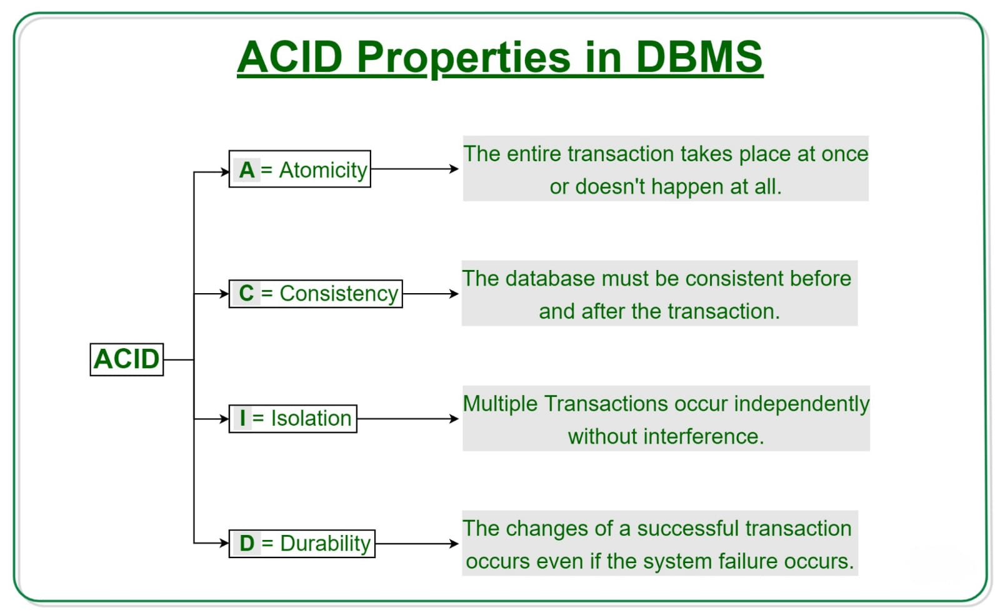
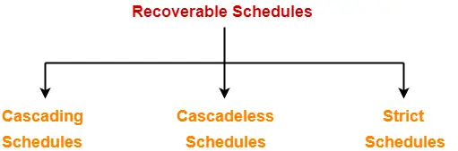
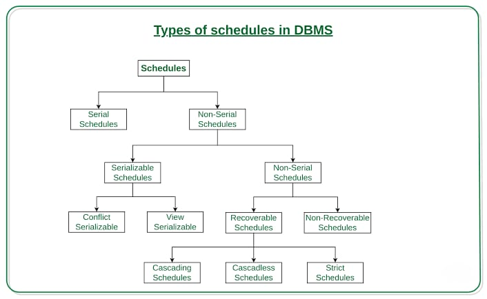

Introduction to Transaction Processing Concepts and Theory
What is a Transaction?
A transaction is a logical unit of work in a database system that consists of a sequence of operations performed as a single unit.
A transaction ensures that the database remains consistent and adheres to integrity constraints, even in cases of system failure.
Transactions are crucial in database management as they help in maintaining data accuracy, reliability, and consistency.
In practical applications, transactions typically involve multiple operations such as inserting, updating, deleting, or retrieving records.
The primary goal of a transaction is to transition the database from one consistent state to another while following the ACID properties
(Atomicity, Consistency, Isolation, Durability).
Transaction Properties
Transactions follow the ACID properties:

- Atomicity - Ensures that a transaction is either fully completed or fully rolled back.
Example: If an online order fails after payment is deducted, the payment is automatically refunded.
- Consistency - Ensures that a database remains in a consistent state before and after a transaction.
Example: If a user books a flight ticket, the available seat count must decrease accordingly.
- Isolation - Ensures that transactions execute independently without interference.
Example: Two users booking the same concert ticket should not both get confirmation for the last seat.
- Durability - Ensures that the effects of a committed transaction are permanently stored.
Example: If a product is added to an e-commerce inventory, it remains there even after a system restart.
Schedules based on Recoverability
Schedules can be categorized as:

- Recoverable Schedules - Ensure committed transactions are never lost.
Example: If a banking transaction is committed, it remains valid even after a power failure.
- Cascadeless Schedules - Avoid cascading rollbacks by ensuring dependent transactions commit before others.
Example: In a warehouse system, an item should be marked as shipped only after confirming payment.
- Strict Schedules - Ensure no transaction reads uncommitted data.
Example: A stock trading system must ensure that a trader cannot see an uncommitted price update.
Schedules based on Serializability
Types of serializability include:

- Conflict Serializability - Transactions can be rearranged into a serial order.
Example: In an airline booking system, one transaction assigning a seat and another canceling a seat must be executed in the correct order.
- View Serializability - Transactions produce the same results as a serial schedule.
Example: Updating customer addresses in a database should result in the same final data regardless of order.
Conclusion
Transaction processing is essential for maintaining data integrity and consistency in database systems. By following ACID properties and ensuring proper scheduling techniques, we can prevent issues like data loss, inconsistency, and concurrency conflicts. Understanding these concepts is crucial for designing robust and efficient database management systems.